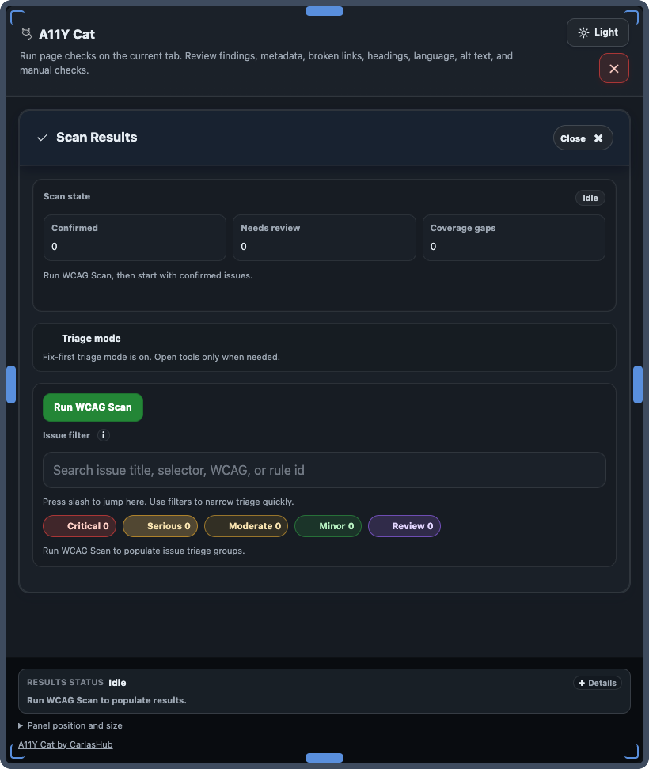

Exports and storage
Exports and local data
Exports are local-user actions. This page defines what each export contains and what local state may be stored.

Export formats
| Export | Contains | Does not prove |
|---|---|---|
| CSV issue log | Flat issue list for triage | Compliance guarantee |
| JSON evidence bundle | Structured findings, categories, source attribution | Conformance certification |
| Local issue-state bundle | Workflow annotations/state | Independent scan verification |
| Support diagnostics | Runtime diagnostic signals | Complete DevTools/network history |
Local history and clear local data
History and workflow state are stored locally in extension storage keys. Users can clear local data from extension controls to remove saved scan/workflow state.

Sensitive content note
Privacy boundary: exports may include page URL/title, selectors, snippets, and workflow notes. Once a file is shared, handling is outside extension control.